Obras
39 pinturas para descubrir. Toca una para conocer su historia.
 Venom
Venom
 Pulpitos de peluche
Pulpitos de peluche
 Gato de noche estrellada
Gato de noche estrellada
 Conejo y copa de vino
Conejo y copa de vino
 Tulipanes en flor
Tulipanes en flor
 Limones
Limones
 Faro junto al mar
Faro junto al mar
 Hibisco
Hibisco
 Arco en el jardín
Arco en el jardín
 Mapache
Mapache
 Pájaro de colores
Pájaro de colores
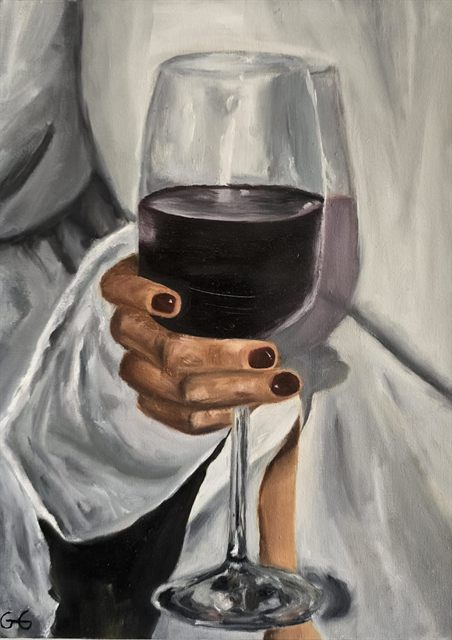
Copa de vino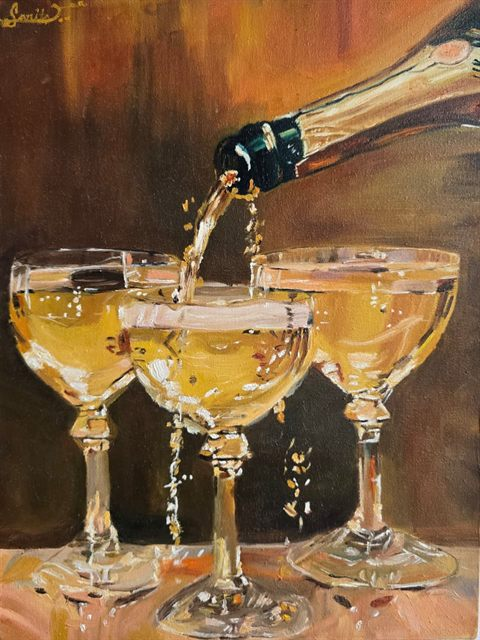
Copas de champaña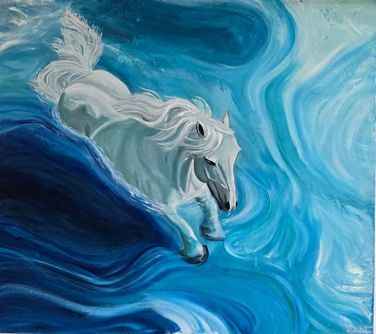
Caballo en el agua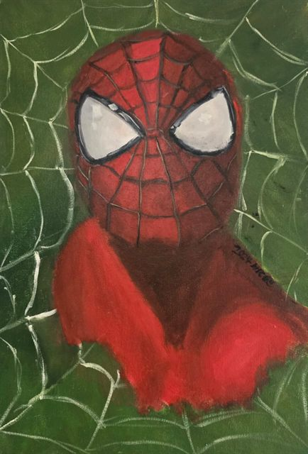
Spider-Man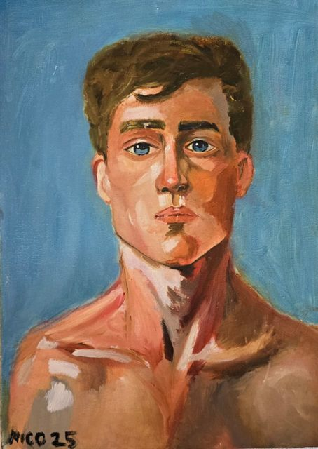
Retrato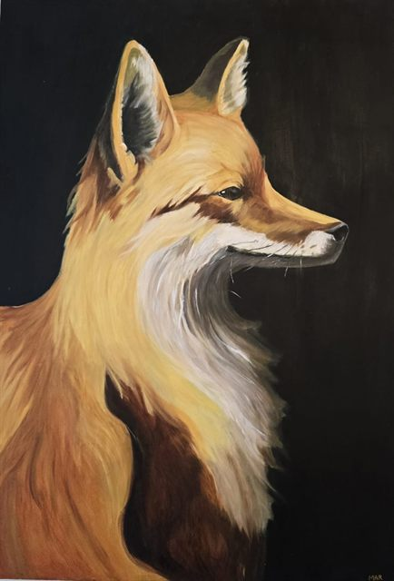
Zorro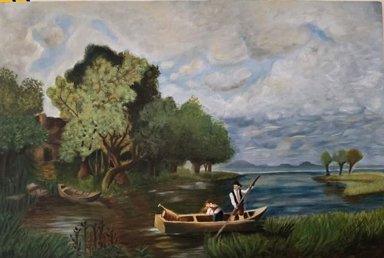
Paisaje con bote Flores moradas
Flores moradas
 Diente de león
Diente de león
 Velero al atardecer
Velero al atardecer
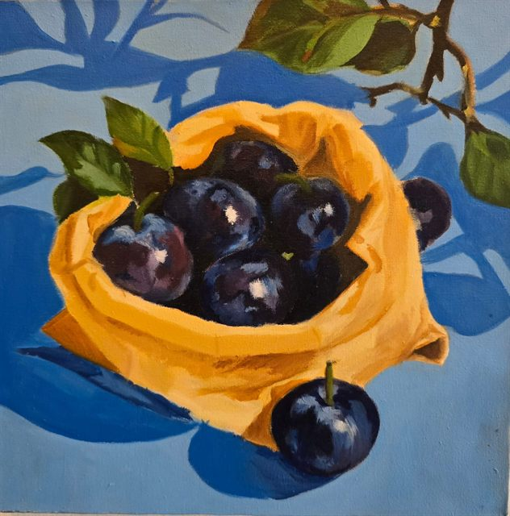
Ciruelas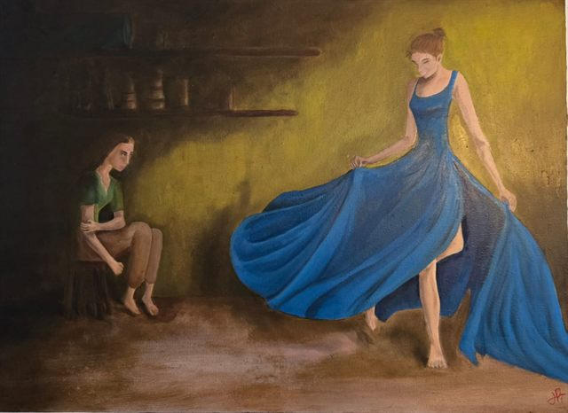
Baile de vestido azul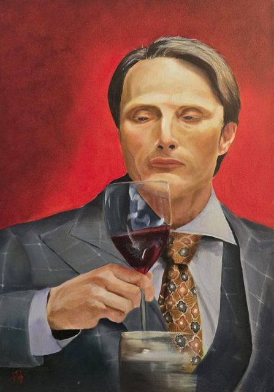
Retrato con copa de vino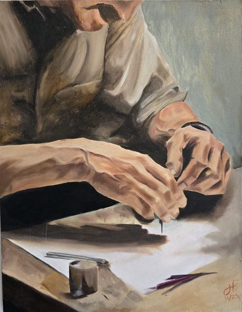
Manos dibujando Paisaje con carreta
Paisaje con carreta
 Cisnes
Cisnes
 Puente al atardecer
Puente al atardecer
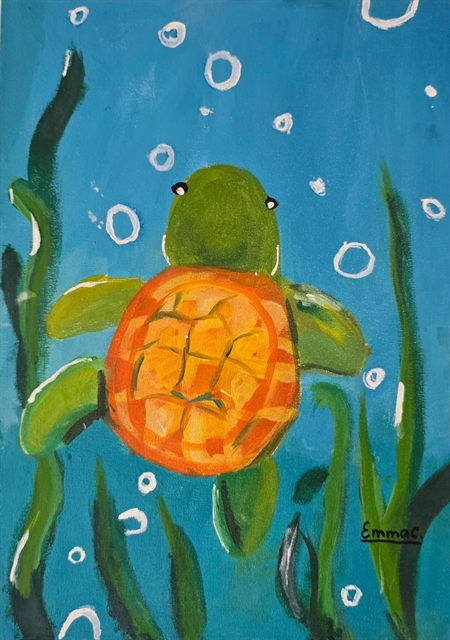
Tortuga marina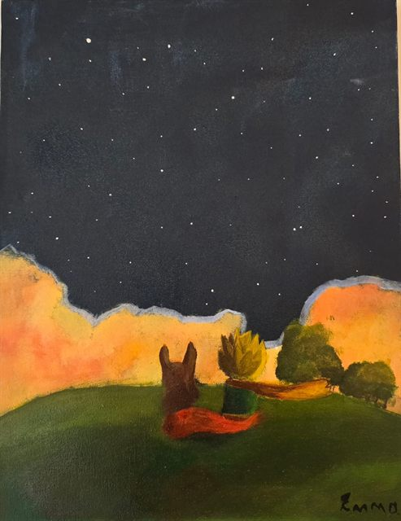
Noche estrellada en la colina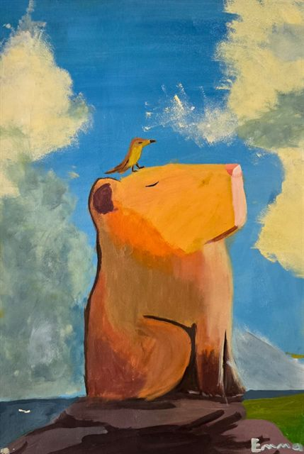
Capibara con pájaro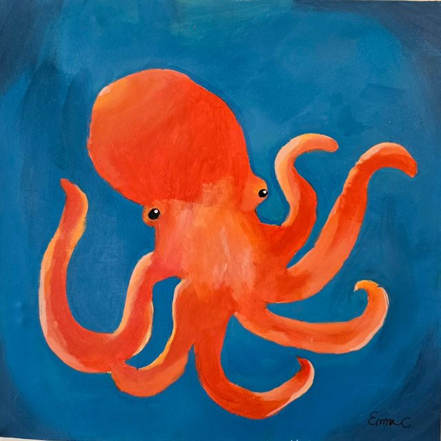
Pulpo naranja Kirby
Kirby
 Hello Kitty entre tulipanes
Hello Kitty entre tulipanes
 Niño con balón
Niño con balón
 Camiseta 10
Camiseta 10
 Osito bajo la lluvia
Osito bajo la lluvia
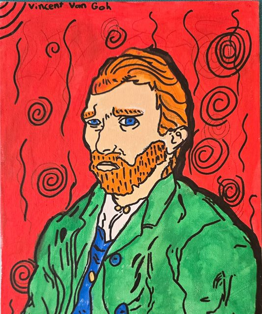
Vincent Van Gogh Corazón y serpientes
Corazón y serpientes